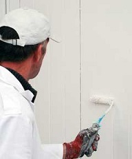

Garage Door Care & Maintenance

Our garage door is the largest moving piece of equipment in our homes. Since most of us use our garage several times a day and even more if we have several motorist in our homes, it will need more maintenance and care than someone who uses theirs less frequently. If you want to make sure that your garage door will always work when you need it to, it will take some action on your part. Preventive care of your garage door is a must, along with routine maintenance.
Here are some of the things that a homeowner can do in order to maintain their garage door:
- Alert everyone to the fact that maintenance is being performed on the garage so that no one attempts to use it while this is occurring. This could be dangerous to the person and the person performing the maintenance on the door.
- Be Observant
This is sometimes easier said than done if your mind is elsewhere. Observing how your door functions isn’t always something that we do until it becomes to much of a problem. This is usually when the door will no longer operate. However, if you are aware of the need to be observant when using your garage, perhaps you will. This is the most important way to determine if there is problem with your garage door. If it is jerky, moving slowly, stops and starts, loud, scraping, grinding or anything else that is not ordinary, it needs maintenance performed. Lubricating, replacing and readjusting certain parts will be necessary. Do these things on a routine basis and keep your door functioning properly. - Lose Hardware
Since our the average garage door goes through more than a thousand cycles per year, it makes sense that some parts of the door will loosen up over time. The movement of the door along with the vibrations caused by use is what loosens the hardware. The bolts and brackets are of primary concern and should be inspected to make sure they are always tight. When a service expert from Complete Garage Door Repair in East Point, GA is called upon to handle the maintenance of your garage, they will always make sure these things are as tight as possible to avoid any further problems. This is also something that homeowners can do if they notice any lose brackets or bolts. All that is required is the right wrench. - Testing Balance
If you want your garage door opener to last as long as possible, it is important that the door is properly balanced. When it is not, the opener works harder and this means that it will not last as long as it could if the door were balanced. Disconnecting the opener from the release handle performs a test.
If you have ever wondered what that red cord is hanging from your opener, now you know; it is the release cord. The door will then be moved halfway up, if the door will not stay up; this means the door is not balanced. Since springs have high tension, a professional service technician should handle balancing the door. - Replacing and Inspecting Rollers
No matter what type of rollers you have, nylon or steel, they need to be inspected several times a year. It is suggested that they are replaced every seven years. In some cases, depending on the amount of use, it is suggested that they are replaced even sooner. If the rollers appear cracked, worn or chipped, they need to be replaced immediately. This can be accomplished by reinstalling roller brackets not directly attached your doors cable system. - Replacing Weatherstripping
Sometimes you might find that the weatherstripping on the bottom of your door is cracked or brittle. This should be replaced as soon as possible in order to prevent the elements from outside from coming, inside. You can do this on your own because it is a pretty safe process. Weatherstripping can be found at almost any hardware or home improvement store. Cut the strip to size and place inside the grooves inside the door. - Keep Parts Lubricated
You would be surprised at how much this simply task affects the way your door operates. However, no matter how simple the process is, many people still fail to keep the components of their garage door lubricated. Doing this simple procedure will help you maintain a fully functional garage door. White lithium grease should be used on the chains and screws of the opener. Use a spray lubricant for the overhead springs. - Check the Cables
When we begin talking about the cables of your garage door, this is where your safety and security should be considered. Since they are high-tension cables, they should be handled with care. The cables need to be strong enough to hold the weight of the doors. If they are worn or frayed, they need to be repaired or replaced as soon as possible. This is when it is in your best interest to rely on the services of a professional garage door service. - Testing Auto-Reverse Safety Feature
Test the mechanical feature by placing something like a piece of wood on in the center of the garage door floor. When the door touches the object on the floor, it should immediately reverse and go back up. In order to test the other auto-reverse features, the photocell, close the door and quickly flash an object underneath to see if reverses. Don’t use a body part, like your leg, in case the feature is inoperable. Keep in mind; if you have an older model garage door opener, the feature may not exist. If you do not have a auto-reverse safety feature, replace your old garage door opener with a newer model. - Keep Tracks Clear
When there is any type of debris or objects on the tracks of your garage, they will impede the movement of your door. Make sure to clear and clean them if regularly to ensure continued use of your garage door.